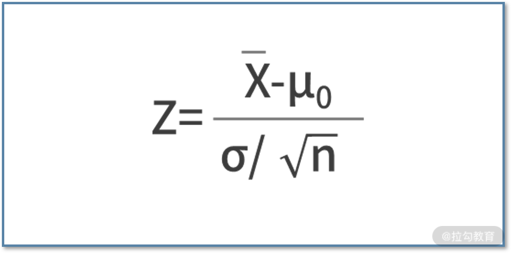
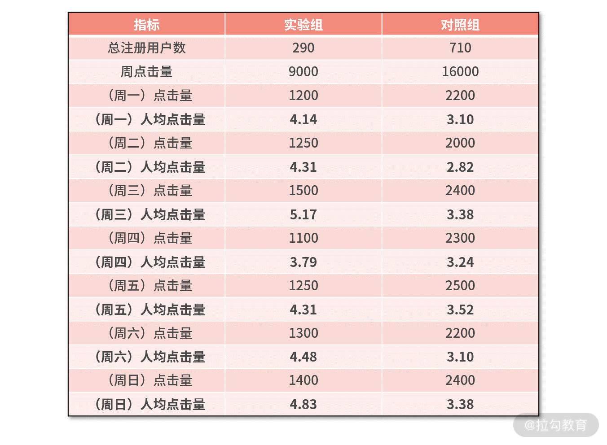
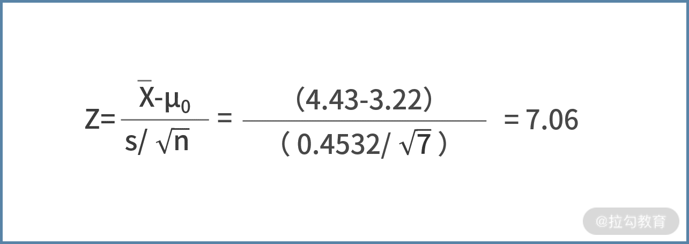

12 统计学方法：如何证明灰度实验效果不是偶然得到的？¶
你好，欢迎来到第 12 课时—— 统计学方法：如何证明灰度实验效果不是偶然得到的？
当你做完 AB 实验，拿着实验结果来论证 v2.0 的系统比 v1.0 的系统效果更好的时候，极有可能有人站出来这样质疑“你的实验结果可信度如何？它是偶然得到的，还是一个必然结果？”
面对这样的质疑，就需要一些统计学的知识了。这一讲，我们就来利用统计学的知识，来论证某个灰度实验的结果的可靠性。
偶然得到的实验结果¶
大迷糊想通过 AB 实验，来探索用左手掷骰子和用右手掷骰子是否有差异。于是，大迷糊先用左手掷骰子得到点数为 2，再用右手掷骰子得到点数为 6。于是得到结论，右手掷骰子比左手掷骰子点数大 4。
这个结论显然是偶然发生的，是不对的。因为常识和经验都告诉我们，两只手掷骰子点数应该是没有差别的。
然而，工作中使用 AB 实验的场景，很可能是没有这些预先、已知的经验的，这就给实验结果的可靠度判断带来了很多挑战。
例如，上一讲 v2.0 的推荐系统相比 v1.0 的推荐系统，在 CTR 上提高了 0.2pp。这个结果到底是偶然得到的，还是真实存在的呢？这就需要我们具备统计学知识——中心极限定理了。
统计学的圣经——中心极限定理¶
中心极限定理是统计学中的圣经级定理，它的内容为：假设从均值为 μ，方差为 σ2 的任意一个总体中，抽取样本量为 n 的样本，当 n 充分大时，样本均值 x̅的分布近似服从均值为 μ、方差为 σ2/n 的正态分布。通常认为 n≥30 为大样本。
中心极限定理的厉害之处，在于它实现了任意一个分布向正态分布的转换，如下图：
至于为什么实现了正态分布就很厉害，下文会为你讲解。
{kind=link}
【例题 1】假设某个总体的分布是 1～6 的均匀分布，现在我们利用中心极限定理来估计一下这个总体的均值和方差。
解析：根据中心极限定理，我们需要先计算 x̅的均值和方差。为了得到某个随机变量的均值和方差，就要得到尽可能多的 x̅的采样点，标记为 x̅i 。对于每个采样点 x̅i，它又是总体的采样点。
因此，我们需要首先对总体进行多次采样，得到一个均值 x̅的采样点。再重复这个过程得到多个 x̅i 的值，这样就能计算出 x̅的均值和方差了。
具体代码如下：
import random
import numpy as np
xbarlist = []
for i in range(1000):
xbar = 0
for j in range(30):
k = random.randint(1,6)
xbar += k
xbar = xbar / 30.0
xbarlist.append(xbar)
npxbar = np.array(xbarlist)
mu = np.mean(npxbar)
var = np.var(npxbar)
print mu
print var
我们对代码进行走读。
- 代码第 2 行，调用了 numpy 库，主要是为了后续计算均值和方差。
- 第 4 行，定义了 xbarlist 的数组，用来保存 x̅的多个采样值。
- 第 5～11 行，通过循环 1000 次，想得到 1000 个 x̅ 的采样值。显然每次循环就是要计算出某个 x̅i 的值，为了求出 x̅i，我们需要对总体进行多次采样。
- 第 7～9 行，循环 30 次。每次循环，调用随机函数 randint，从 1～6 中，以均匀分布随机得到一个采样值，并且计算这 30 个值的和。
- 第 10 行，用求得的和除以 30，得到了这 30 个值的平均值，即 x̅i。
- 第 11 行，把 x̅i 保存到 xbarlist 的数组中。在上面的循环都结束后，就得到了 1000 个 x̅的采样值。
- 接着第 13 行，把数组转换为 numpy 下的数组。
- 再在第 13～14 行，调用求均值和求方差的函数，得到了 x̅的均值和方差，并打印。
上面代码执行的结果为：  可见极限中心定理下 x̅的 μ = 3.5，σ2/n = σ2/30 = 0.0953。从而估计出总体的均值为 3.5，总体的方差为 σ2 = 0.0953×30 = 2.859。
可见极限中心定理下 x̅的 μ = 3.5，σ2/n = σ2/30 = 0.0953。从而估计出总体的均值为 3.5，总体的方差为 σ2 = 0.0953×30 = 2.859。
我们再反过来看一下原来的总体的分布：
- 因为是 1～6 的均匀分布，因此均值为 3.5（0～6 均匀分布的均值才是 3），这与中心极限定理的计算结果一致；
- 而方差可以根据定义式进行计算，则有方差 = [(1-3.5)2 + (2-3.5)2 + (3-3.5)2 + (4-3.5)2 + (5-3.5)2 + (6-3.5)2]/6 = 2.9167，这也与中心极限定理计算的结果几乎一致。
这个案例讲完，你依旧会琢磨，中心极限定理到底有什么奇妙之处呢？为何它能称得上统计学的圣经级定理呢？接下来我将用最通俗的方式向你讲解。
【白话中心极限定理】¶
通常，现实中的总体都是一个陌生的分布，例如推荐系统每天的点击率。如果从均值和方差的定义式出发，则需要知道这个总体中每个样本的值。可惜的是，实际情况中的总体很可能包含了无穷多个样本。要想从定义式的角度出发，来计算统计量往往是不可行的。
而中心极限定理，则构建了样本和总体之间的桥梁。总体的统计量算不出来，就对总体抽样，得到一个新的随机变量 x̅，x̅ 的统计量可以根据抽样的结果来计算。此外，中心极限定理还告诉了我们，抽样的统计量和总体的统计量之间的关系，那么就可以根据抽样的统计量推导出总体的统计量。 > 因此，我们说中心极限定理是使用统计学去解决实际问题的前提基础，是后续统计学应用的理论桥梁。
在实际做 AB 实验的场景下，你的目的是要验证实验组与对照组，这两个总体之间是否具备显著性的差异。可惜的是，总体的分布往往是不知道的，你只能通过对总体进行采样，来估算总体的统计量；也就是利用采样样本的均值和方差，来估计总体的均值和方差。
这就需要去运用中心极限定理了，一旦有了实验组、对照组两个总体的均值和方差，就可以利用一些检验手段，来计算显著性了。
所以接下来，我们便需要将中心极限定理应用在 AB 实验中，去 论证实验是不是随机得到的，这就需要用到统计学“均值假设检验“的知识了。
均值假设检验 均值假设检验，就是要验证通过 AB 实验得到的某个均值是否存在显著的差异。 这里显著的含义是，结果是真实、客观的规律，并非偶然得到¶
假设检验的流程分为两步：
- 第一步，计算检验 统计量 Z 的值。 - 第二步，再根据数值大小，查下面的标准正态分布表得到 代表显著性的 p 值。如果 p\<0.05 则认为结果是显著的，并非偶然得到的。
我们详细阐述一下这两个步骤。根据实际情况不同，Z 统计量可以有两种计算方法：
- 第一种方法，当总体的标准差 σ 已知时，计算方法是 
- 第二种方法，当总体标准差未知时，可以采用样本的标准差 s 来代替总体的标准差，公式为

{kind=link}
其中 μ0 就是假设的均值；若有 AB 实验， μ0 则为对照组的均值。
接着，就需要根据 Z 的值，查下面的 Z 统计量分布表得到 显著性 p 的值了，显著性 p 的物理含义是观测结果是偶然得到的概率。 Z 统计量分布表 #### 【如何看 Z 统计量分布表】
{kind=link}
这个表其实是个大矩阵，矩阵的行标签和列标签之和，就是 Z 统计量。而矩阵中每个数字，代表了观测结果不是偶然发生的概率。
例如，利用第 2 行、第 3 列的数值，可以计算出 Z 为 0.12 的显著性水平（Z 统计量分布表中绿框部分）。
通常，人们选择表中 0.9750 作为临界值（图中上面的红色框）；也就是说，Z 统计量的临界值是 1.96。人们常常根据 Z 统计量的绝对值与 1.96 的关系来判断是否显著，即绝对值大于 1.96 则认为显著，反之亦然。
之所以选择 0.9750，是因为此时的显著性为 0.05 时，即观测结果是偶然发生的概率为 5%。这里 0.05 计算而来的公式是 (1-0.9750)×2 = 0.05，这个公式背后的含义涉及正态分布的累积概率的计算，在此我们不展开说明，感兴趣的同学可以自己查阅相关的统计学教材。
上面的理论可能比较枯燥，我们下面结合一个例子，来加深对理论的理解。
【例题 2】假设某工厂加工一种零件。根据经验知道，加工出来的零件的长度服从正态分布，其总体均值为 0.081mm。现在，换了一种新机床进行加工，取 200 个零件进行检验，得到长度的均值为 0.076mm，这 200 个样本的标准差为 0.025mm。问新机床加工出来的零件的长度，其均值与以前是否存在显著差别？
解析：新机床得到的零件，均值比以往要略小。那么问题来了，这里的“略小”是偶然得到的，还是显著存在的呢？我们可以通过假设检验的方法进行论证。
由题可知，总体的均值 μ0= 0.081，总体的标准差未知。采样的数量为 n = 200，采样的均值 x̅= 0.076，采样的标准差 s = 0.025，因此可以根据第二种方法，来计算 Z 统计量：  接下来我们需要查 Z 统计量分布表来判断是否存在显著性差异，而此时 Z = -2.83（Z 统计量分布表中蓝框部分），负号表示要检验的结果比对照基线小。由于 |Z| > 1.96，所以 p\<0.05，差异显著。从统计学的视角来说，我们有理由相信此时的差异并不是偶然得到。
接下来我们需要查 Z 统计量分布表来判断是否存在显著性差异，而此时 Z = -2.83（Z 统计量分布表中蓝框部分），负号表示要检验的结果比对照基线小。由于 |Z| > 1.96，所以 p\<0.05，差异显著。从统计学的视角来说，我们有理由相信此时的差异并不是偶然得到。
综上可见，论证结果是否为偶然得到的关键，取决于 Z 统计量的值。Z 统计量的值，又与均值的差值、采样的标准差和采样数量有关系。均值差异越大、采样标准差越小、采样数量越多，则结果越显著、越不可能是偶然得到的。
利用“均值假设检验”论证实验结果是否为偶然得到¶
刚刚讲解的 “均值假设检验”可以论证“两个均值”的偏差是否为偶然得到的。我们将它对应到 AB 实验中，会发现其中一个“均值”是总体的均值，就像是 AB 实验中的对照组；另一个“均值”是抽样的均值，就像是 AB 实验中的实验组。所以有了“均值假设检验”的理论基础，你就可以论证并回答，实验组相对对照组的差异是否为偶然得到的。
我们继续以大漂亮的推荐系统 v2.0 为例。下面是先前的实验观测数据，但很容易被人质疑是否为偶然得到。接下来，我们就来用均值假设检验，来论证实验结果是否显著。我们以人均点击量为例展开论述。  围绕刚刚讲过的 Z 统计量的公式，我们先需要帮助大漂亮找到这些参数的值。
围绕刚刚讲过的 Z 统计量的公式，我们先需要帮助大漂亮找到这些参数的值。  从公式出发，光有个实验组人均点击量为 31，对照组人均点击量为 23，肯定是不够的，至少是需要构建 n 个人均点击量才行。因此，我们考虑把为期一周的实验，切分为每一天来统计 7 个指标。
从公式出发，光有个实验组人均点击量为 31，对照组人均点击量为 23，肯定是不够的，至少是需要构建 n 个人均点击量才行。因此，我们考虑把为期一周的实验，切分为每一天来统计 7 个指标。
具体地计算每天的点击量，并根据注册用户数，计算每天的人均点击量，则有 
{kind=link}
- 此时，我们就有了人均点击量的 7 个采样样本，即 n = 7。
- 接下来，对这 7 个样本求平均值，则有 x̅= (4.14+4.31+5.17+3.79+4.31+4.48+4.83) / 7 = 4.43。
- 再计算对照组的采样平均值，则有 x̅0 = (3.10+2.82+3.38+3.24+3.52+3.10+3.38) / 7 = 3.22。根据中心极限定理，可以用采样的平均值，作为总体平均值的估计值，则有 μ0=x̅0= 3.22。
- 同时，还可以根据实验组的 7 个采样值，计算出实验组的标准差，即

- 最后，我们利用上述信息，来计算 Z 统计量的值，则有 
{kind=link}
很显然，这里的结果比我们的临界值 1.96 更大，结果是显著的，并不是偶然得到的。
小结¶
这一讲，我们学习了统计学的知识“中心极限定理”和“均值假设检验”，并将它应用到工作中，用来论证 AB 实验的结果是否为偶然得到。
我们了解到，中心极限定理 构建了样本和总体之间的桥梁，让我们找到抽样的统计量和总体的统计量之间的关系。
然后 “均值假设检验” 又可以论证“两个均值”的偏差是否为偶然得到。我们将其对应到 AB 实验中，会发现其中一个“均值”是总体的均值，就像是 AB 实验中的对照组；另一个“均值”是抽样的均值，就像是 AB 实验中的实验组。所以便可以论证并回答，实验组相对对照组的差异是否为偶然得到的。这时的关键步骤，就是根据公式来计算 Z 统计量的值，并判断。
最后，我们给出一个练习题：利用下面的数据，计算 CTR 的差异是否显著。